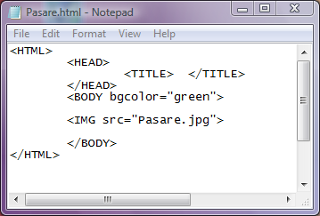
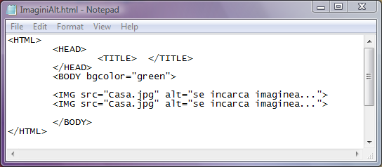
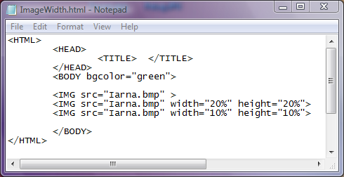
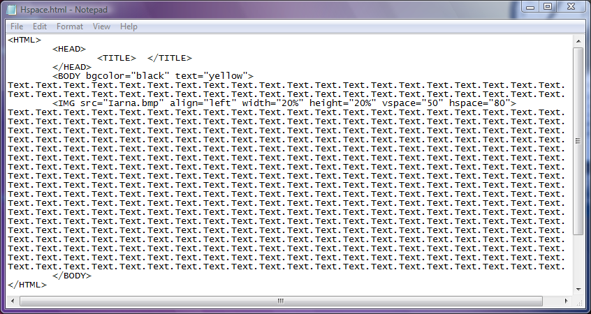
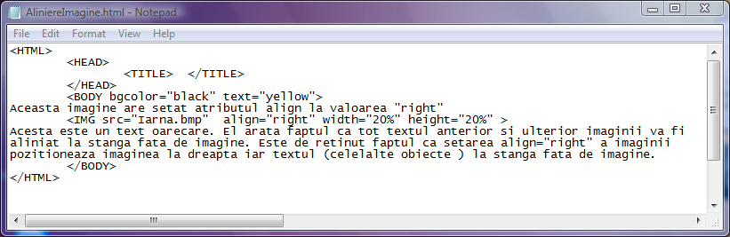
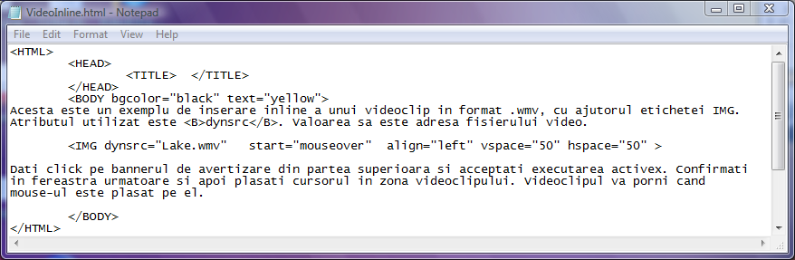

Imagini
Aproape ca nu exista pagini web care sa nu aiba inserate imagini. Imaginile din paginile web
fac de mule ori sarea si piperul, informatiile vizuale fiind esentiale pentru diverse scopuri. De
exemplu cum ar putea un magazin on-line sa desfaca cu succes diverse marfuri daca cumparatorul
care viziteaza situl magazinului nu are contact vizual cu marfa dorita?
In sectiunea Blocuri de text, partea referitoare la atributele etichetei BODY, am aratat cum poate
fi setata o imagine ca fundal al paginii web. In sectiunea Imagini nu vom mai reveni asupra acestui
aspect ci doar vom ilustra modul de inserare a imaginilor ca obiecte in pagina web.
Pentru inserarea unei imagini stocate intr-un fisier imagine se foloseste eticheta IMG (prescurtare
de la Image). Eticheta IMG este singulara in sensul ca nu exista o a doua eticheta care sa indice
sfarsitul imaginii. Eticheta IMG in sine nu inseamna nimic fara pleiada de atribute disponibile.
In continuare vor fi prezentate cele mai importante atribute ale etichetei IMG, cele care seteaza
ce imagine va fi inserata si cum va fi ea afisata.
1) Atributul src
Atributul src este cu siguranta cel mai important atribut deoarece el defineste fisierul imagine
care va fi incarcat in pagina web. Valoarea lui este adresa absoluta a fisierului (unitate de disc,
structura de subdosare si numele fisierului inclusiv extensia). In cazul in care fisierul imagine
este stocat in acelasi dosar cu pagina web, atunci ca valoare a atributului src va fi doar numele
fisierului imagine (inclusiv extensia).
Iata un exemplu de inserare a unei imagini stocate in fisierul Pasare.jpg in pagina web aflata in
acelasi dosar. Click pe cod pentru a deschide pagina web.

2) Atributul alt
Atunci cand browserul trebuie sa afiseze si text si imagini, este de stiut faptul ca textul se
incarca mai rapid. Daca dimensiunea fisierului imagine este foarte mare decalajul intre afisarea
textului si incarcarea imaginii este neplacut de mare. Pentru ca in locul imaginii sa existe ceva
pana cand se incarca imaginea, in acest caz un text, se utilizeaza atributul alt care are
ca valoare un text care va tine locul imaginii. Codul sursa de mai jos ilustreaza modul in care
se seteaza un text inlocuitor pentru imagine. Click pe cod pentru a deschide pagina web.

Din pacate incarcarea se face foarte rapid de pe hard disk si nu poate fi vazut textul alternativ.
Textul alternativ este lizibil in cazul in care se incarca o pagina web din Internet si ea contine
imagini de dimensiuni mari.
Cu toate acestea, am dat acest exemplu pentru a vedea din codul sursa al paginii web cum trebuie
procedat! Oricum merita vazuta orice poza de calitate...
3) Atributul lowsrc
Este o varianta alternativa pentru imagine pana cand aceasta se incarca, doar ca inlocuitorul imaginii
va fi tot o imagine, de rezolutie slaba insa, care se incarca rapid chiar si in conditiile unei conexiuni
slabe la Internet. De preferinta alternativa ar trebui sa fie aceeasi poza, dar prelucrata cu un
program specializat astfel incat rezolutia ei sa fie cat mai mica. Valoarea atributului lowsrc va fi deci
adresa unui fisier imagine de rezolutie redusa.
4)-5) Atributele width si height
Cele doua atribute seteaza latimea si respectiv inaltimea imaginii inserate in pagina web. Valorile
atributelor width si height pot fi:
-numere pozitive reprezentand lungimi exprimate in pixeli
-procente fata de latimea si inaltimea originale ale imaginii
O mare atentie trebuie acordata redimensionarii prin procente a imaginii deoarece pentru a obtine o
imagine marita sau micsorata dar asemenea cu imaginea initiala trebuie tinut cont si de raportul
latime/inaltime ale ecranului monitorului. Nu este indiferent daca monitorul afiseaza in formatul 4:3
sau 16:9!

6)-7) Atributele hspace si vspace
Aceste doua atribute hspace si vspace seteaza distantele pe orizontala si respectiv
verticala dintre imagine si celelalte obiecte din pagina web. Valorile acestor atribute sunt fie numere
pozitive reprezentand distanta exprimata in pixeli, fie un procent reprezentand fractiunea din latimea
- respectiv inaltimea- ferestrei browserului. In exemplul de mai jos este ilustrat modul de setare a
distantelor pe orizontala si pe verticala dintre o imagine si textul din pagina web. Click pe cod
pentru deschiderea paginii web.

8) Atributul align
Atributul align seteaza modul de aliniere a imaginii relativ la celelalte elemente ale paginii
web.Valorile atributului align sunt:top, middle, bottom, left, right, texttop, absmiddle sau baseline.
Denumirile acestor valori sunt sugestive in ceea ce priveste efectul lor. In exemplul urmator este
ilustrata alinierea unei imagini la dreapta fata de textul din pagina web.Click pe cod pentru a deschide
pagina web.

8) Atributul dynsrc
Atributul dynsrc permite vizionarea videoclipurilor inline. Valoarea acestui atribut este
adresa unui fisier video ca de exemplu nume.avi, nume.wmv, etc. Impreuna cu dynsrc se poate asocia si
atributul start cu valorile "fileopen" (pornire automata a videoclipului la deschiderea
paginii web) sau "mouseover" (pornirea videoclipului la plasarea mouse-ului deasupra locului
unde va fi afisat videoclipul). Oprirea videoclipului se face prin clic-dreapta pe el si selectarea optiunii
Stop.
In exemplul urmator este prezentata o pagina web cu un videoclip inline. Click pe cod pentru a deschide pagina
web.
